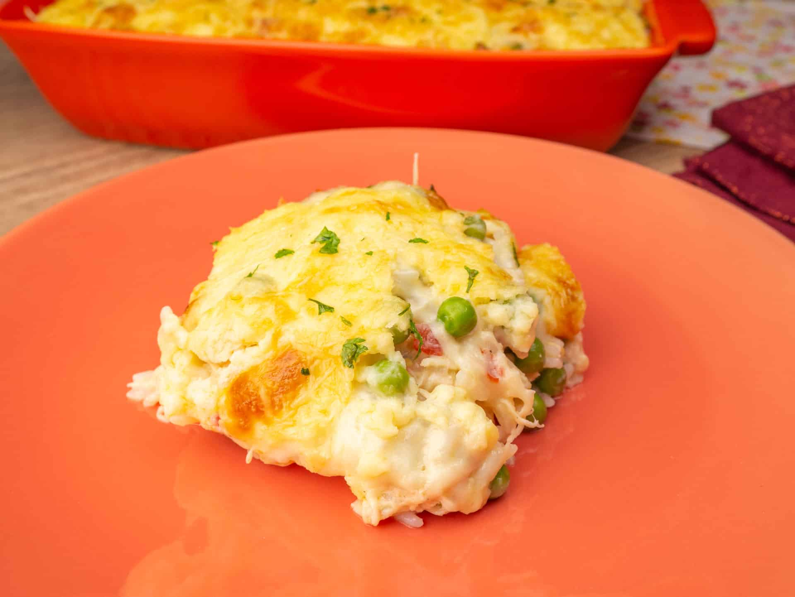

Mousse de Maracujá
- 1 lata de leite condensado
- 1 lata de creme de leite sem soro
- 1 lata de suco de maracujá
- Em um liquidificador, bata o creme de leite, o leite condensado e o suco concentrado de maracujá.
- Em seguida, em uma tigela, despeje a mistura e leve à geladeira por, no mínimo, 4 horas.
Sorvete de Morango
- 2 caixas de creme de leite
- 1 caixa de morango
- 1 lata de leite condensado
- Bata os morangos no liquidificador.
- Misture os Cremes de Leite e os morangos até ficar homogêneo.
- Adicione o leite condensado e misture
- Leve ao congelador por no mínimo 12 horas

Frango Cremoso
- 10 filés de frango levemente temperado com sal, pimenta-do-reino e limão
- 1 caixinha de creme de leite
- 1 lata de milho verde escorrido
- 1 pacote de creme de cebola
- 1 copo de requeijão
- Pegue os filés de frango temperadinhos, empane no creme de cebola. Arrume numa assadeira untada.
- Depois, no liquidificador bata o creme de leite, o milho escorrido e o requeijão, até formar uma mistura homogênea.
- Jogue essa mistura por cima do filé de frango.
- Cubra com papel alumínio, e leve ao forno pré-aquecido por 20 minutos. Retire o papel deixe mais 5 minutos para dourar.
- Sirva com arroz salpicado com salsinha.